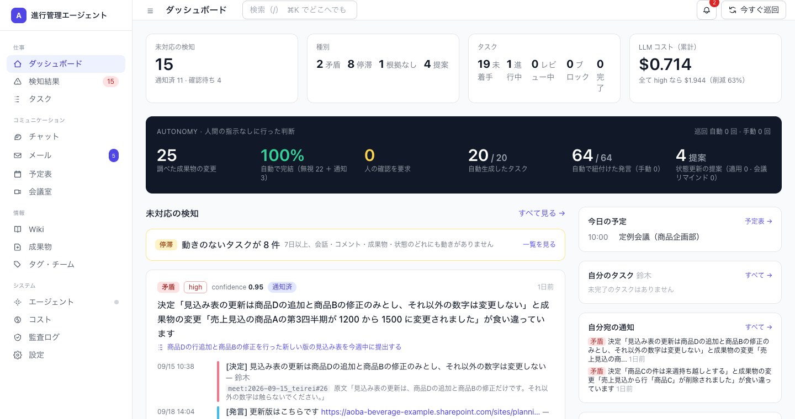

エージェントからの通知（実データ・架空企業）
「9/15 の定例で『それ以外の数字は変更しない』と決まっていますが、山田さんが 9/18 に更新した見込み表では商品Aの第4四半期が 1200 → 1500 に変わっています。」なぜ誰も気づけないのか
- 決定は会議・チャット・メールに散らばり、成果物は Excel / Word / Wiki にある
- 「突き合わせ」は誰の仕事でもないので、気づくのは資料が出回った後
- 既存ツールは 1つの中の検索 はできても 横断で矛盾を探しに行く ことはしない
仕組み

5つの情報源を1種類の「出来事」に正規化 → 統合グラフ → 成果物が変わるたびに関連する決定を引き当てて判定
9/10評価セットの検知率
誤検知 0
誤検知 0
8秒保存 → 検知
（イベント起動）
（イベント起動）
-59%LLM コスト
$0.84 vs 全て high $2.07
$0.84 vs 全て high $2.07
100%人の指示なしで
完結した判断
完結した判断
見つけるもの（4種類）
矛盾決定と成果物の変更が食い違う。根拠（決定・発言・変更）と判定理由つき
根拠のない変更どの決定にも紐付かない変更。「誰が決めた？」を先に聞く
停滞7日以上、会話・コメント・成果物・状態のどれにも動きがないタスク
状態更新の提案「終わりました」「着手します」の発言から、タスク状態の更新を提案（LLM 不使用）
画面

ダッシュボード：未対応の検知・自律性の数値・根拠（決定→発言→変更）と判定理由が1枚に
ブースで見られること
1. 会議で決める自作の会議室で話す → 話者別に文字起こし → 決定とタスクを自動抽出
2. Excel を保存するブラウザ編集でも、監視フォルダに保存しても、版として取り込まれる
3. 数秒後に通知「この変更、9/15 の決定と食い違っています」と根拠つきで担当者へ
セキュリティ設計（やること／やらないこと）
| 送るデータ | 判定に必要な最小限。人名・メール・電話はマスクして送信、応答で復元 |
|---|---|
| 指示の混入 | 議事録は「データ」として囲う。指示文を混入させた実演で抽出に漏れないことを画面で確認できる |
| 書き込み | エージェントは通知と提案まで。状態変更・成果物の書き換えは人が承認 |
| 幻覚 | 抽出結果の引用が原文に無ければ機械的に破棄 |
| 権限 | admin / member / viewer のロールで変更操作を制限。全変更を監査ログに記録。コネクタは読み取り専用スコープのみ |
OrcaRouter の使い分け
| high（Opus） | 矛盾の判定だけ。根拠と文脈を渡して1件ずつ |
|---|---|
| mid（Gemini Flash） | 決定・タスクの抽出、紐付けの最終段、議事録要約 |
| embed | 候補絞り込み・重複統合・紐付け（LLM を呼ぶ前に絞る） |
| コード | 時系列ガード、語彙ゲート、引用検証、閾値判定 — LLM を呼ばない部分を先に置く |